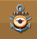
Lacis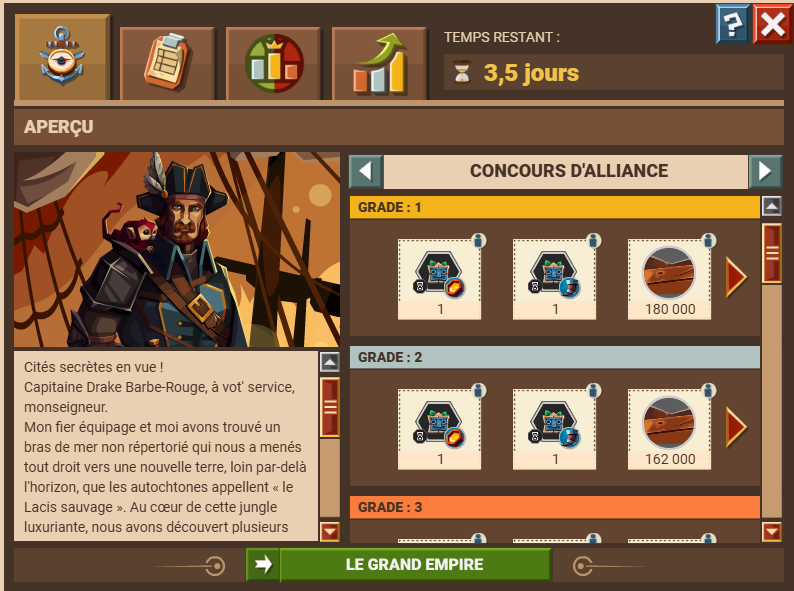
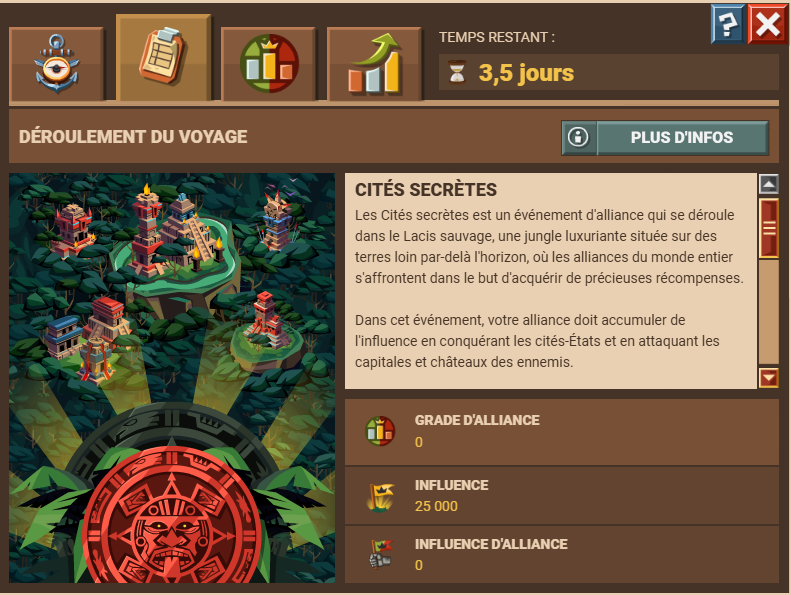
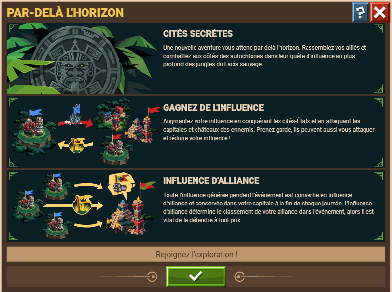
Le Lacis est un eve de 4 jours dans lequel des joueurs venant de divers serveurs s’affrontent.
Chaque alliance est limitée à 22 membres, et chaque joueur d’une alliance sur un serveur national (fr par exemple) arrive sur le lacis avec des membres de son alliance, s’ils sont sur le lacis. Pour les alliances de plus de 22 membres, les 22 premiers arrivés sont dans une alliance 1 et les suivant dans l’alliance 2 (smets1er_1 et smets1er_2 par exemple). Participer à cet event est suffisant pour prétendre aux récompenses d'alliance, parmis lesquelles ont trouve du tissus.
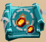
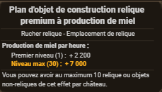
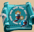
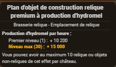
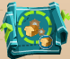
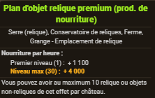
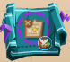
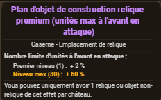
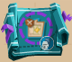
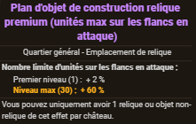
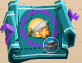
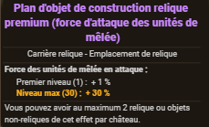
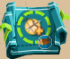
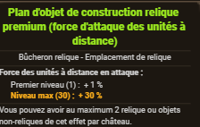
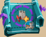
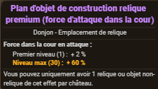
Tout au long de l'évènement, il y a un classement des alliances par points d'influences, ainsi qu'un classement entre membres d'alliance
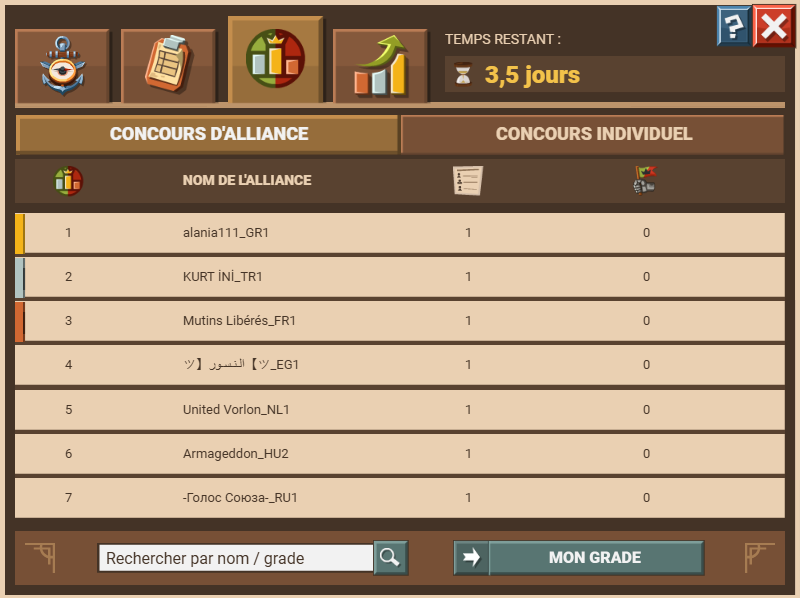
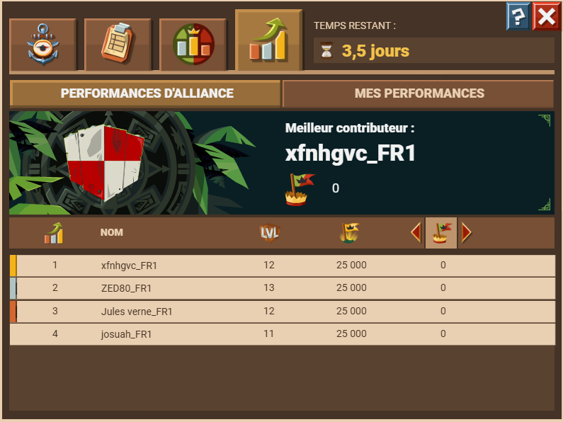
Acheter chez le vendeur d'équipements pour 65k pièces le leg de la chèvre (commandant unique) => bcp de points de puissances et 3k soso horreurs mortelles/démoniaques
Déménager le cp pas loin de la capitale (si possible) pour pouvoir l'alimenter en ressources pour l'améliorer et la défendre
Acheter le maraudeur dès que possible (990 ruru) : 15k pièces par sanctuaires lvl 40
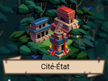
Les cités-états sont des pnj au même titre que les sanctuaires et our d'observations. Le pprincipe de cet event est d'attaquer des cités-états afin de gagner de l'influence. Les cités-états s'apparentent à des cp, et disparaissent après que le temps de capture soit passé (8 heures).
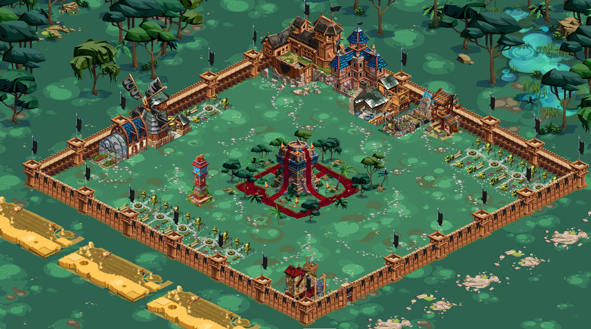
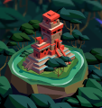
Une fois entré dans le Lacis, chaque joueur a 25k d’influence. Cette influence est stockée sur son cp. Pour gagner de l’influence, les autres joueurs attaquent les cités, cp ou capitales, d’où le besoin de les blinder de def à la fin d'une capture de cité. Afin de maximiser les gains, monter son cp est un point super important. Pour ça, je conseille de terminer les quêtes xp pour arrvier au lvl 15, et monter le quartier général lvl 2 (6 comm). Ainsi, il est possible de lancer 6 attaques en même temps (piller des sanctuaires/cp). Le manoir est un autre bâtiment à ne pas négliger : les ap, surtout les 8 bouffe, sont un bon moyen pour stocker les soso attaque et garder les def au cp (les ap sont rarement voir jamais pris pour cible). Et bien évidemment monter le marché pour envoyer des ressources soit à ses ap, ou à la capitale.
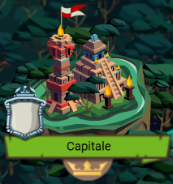
La capitale d'une alliance est attribuée au chef de l'alliance, soit le premier membre d'une alliance à entrer dans le Lacis. Une capitale est l'équivalent d'un cp, qui stocke toute l'influence de l'alliance vers 00h00 chaque jour, et cette influence est comptabilisée pour les classement vers 00h30.
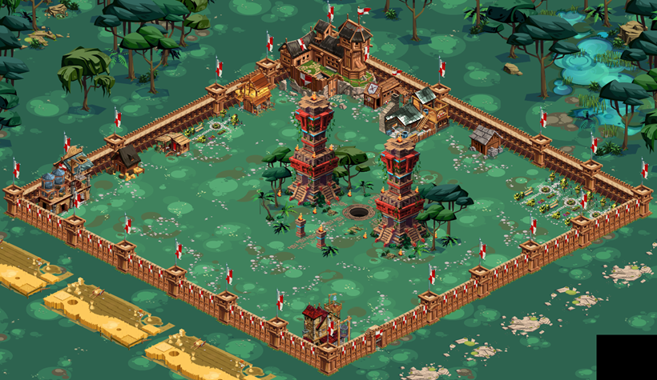
C'est la raison pour laquelle la majorité des attaques qui ciblent une capitale surviennent à ce moment précis, entre 00h00 et 00h30. Le choix de ce membre est capital, car c'est lui qui va pouvoir monter la capitale et ses def. Ce membre doit être choisis à l'avance pour éviter les pb.
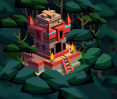
Les tours d'observation sont des pnj. Capturer une tour d'observation octroie un bonus d'attaque sur les cités-états (20%), ce qui est assez conséquent. Tout comme pour les cités-états, il est impossible pour une alliance d'en avoir plus de 5 en même temps.
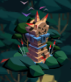
PNJ et équivalent des fieffés du grand empire, les sanctuaires se démarquent par le fait que jusqu'au niveau 40 (max), une victoire= +1 niveau, contrairement aux fieffés pour lesquelles cette règle n'est valable que pour les premiers niveaux, en plus les fieffés ça va jusqu'au niveau 81. Attaquer des sanctuaires et les piller est un très bon moyen de gagner des pièces et des ressources. Si lors des attaques le gain en pièces et ressource ne semble pas important, les gains liés à la quête "en pleine jungle" l'est bien plus. Au début c'est 24 pièces, pour atteindre plus de 8k lvl 40 sans compter les équipements. L'avantage est les quêtes à la clés (xp + ressources)
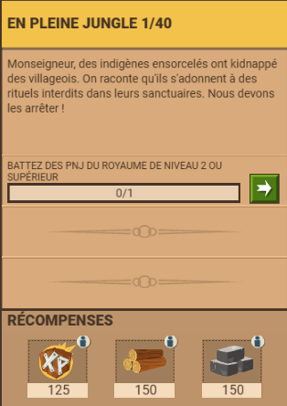
Comme pour les RE, le maître-forgeron propose des soso.engins/ressources/jetons/sabliers et jeton généraux contre des pièces et ruru. Les articles proposés sont les mêmes qu'aux RE.
Pour la suite, plusieurs stratégies existent, en fonction des objectifs
Pour la capture de cités, il existe plusieurs stratégies. Voici des conseils pour pas voir à être tout le temps devant l’écran :
Une bonne raison de participer à cet event est le succès lié :
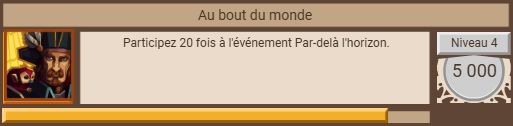
Lien du discord de smets1er : https://discord.gg/TruMwabN
Un bon tuto vidéo en anglais : https://youtu.be/VUA1C-i4uK0
P-S : je suis pas marabout grand sorcier, donc si vous avez des modifs mettez-les dans le chat 😊